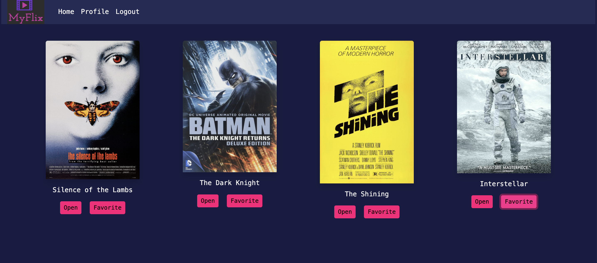
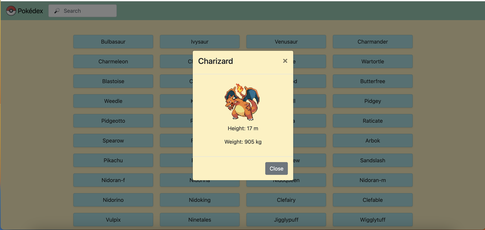
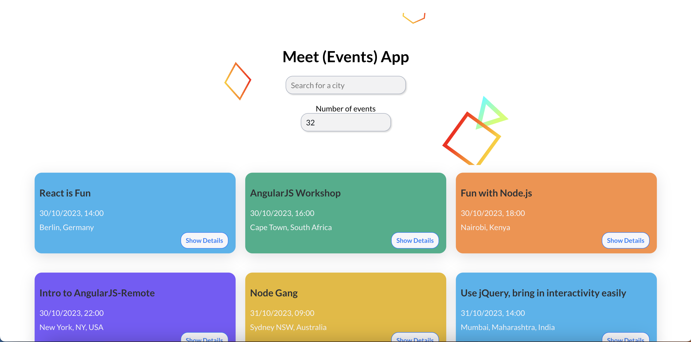

Work
My Flix Client
This application serves as the user interface for a movie-related platform. It provides essential details about movies, such as descriptions, genres, and director information, including biographies. Users can also create accounts, update their profiles, manage their list of favorite movies, and even delete their accounts.
Technologies: React SCSS Parcel
Movie API

This Node.js project, created using the Express framework, serves as the backbone for the MyFlix Application. The movie database, designed with MongoDB, departs from traditional SQL databases.
Technologies: Node.js Express Mongoose (for MongoDB)
MyFlix Angular client

This Angular application serves as the frontend for a movie app, with a movie API as its backend. Users can register, sign in, and access a catalog of movies. Additionally, users have the option to mark movies as favorites. This project was initialized using Angular CLI.
Technologies: Angular TypeScript
Pokédex application
Explore a curated collection of Pokémon on this website, where you can click on each one to unveil in-depth details. The comprehensive Pokémon information is sourced directly from the PokeAPI. This website was meticulously crafted using pure JavaScript.
Technologies: JavaScript jQuery HTML CSS
Chat View

This mobile application is designed for real-time chat functionality, using React Native as its development framework. It leverages Firebase as the backend service provider to enable users to engage in live conversations.
Technologies: React Native Expo Firebase (Firestore, Storage) React Native Gifted Chat Node.js
Meet (Events) App
A serverless, progressive web application (PWA) with React using test-driven development (TDD) and behavior-driven development (BDD) techniques. The application uses the Google Calendar API to fetch upcoming events.
Technologies: React, React Testing Library, AWS Lambda, Recharts, OAuth2, External API, Jest-Cucumber, Puppeteer Gherkin